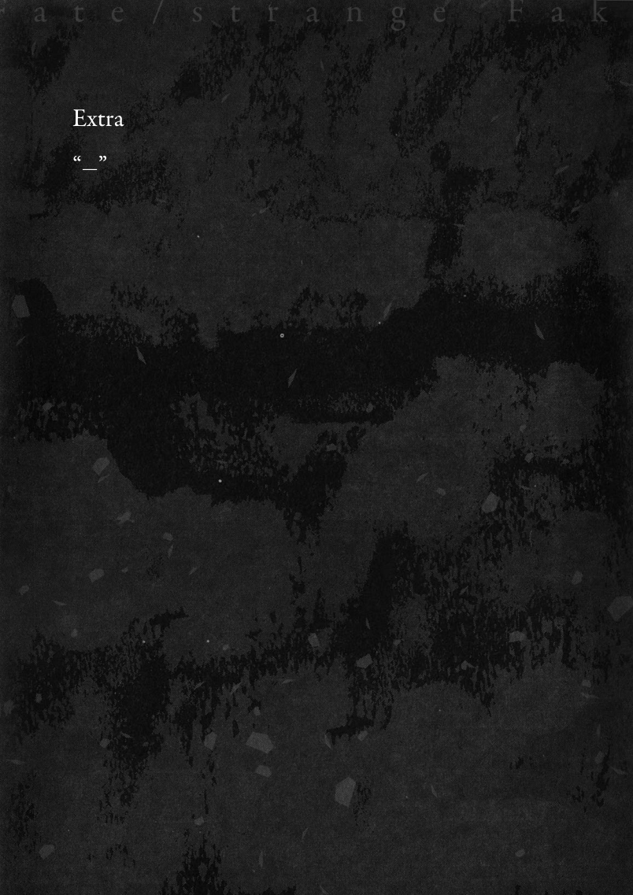

A mente do jovem recordou palavras que quase o faziam sentir nostalgia. "Ouça bem, ouça bem, irmão: você deve destruir aqueles que tirariam algo de nós." "Seus pais lhe foram tirados por gente que veio de fora. Os homens que o criaram foram mortos por invasores impregnados pela corrupção de fora. Sua mãe foi raptada por um demônio terrível vindo de fora."
"Então destrua-os, irmão. Destrua aqueles que tirariam algo de nós." "Então lute, irmão. Lute para que possamos recuperar sua mãe." Em seguida veio uma voz da qual ele não sentia saudade, e provavelmente nunca mais ouviria. "Ora, você tem coragem, hein, se consegue olhar para o que eu tenho aqui sem vacilar! Ou talvez não... Hmm. Sua substância é fina demais. Tenho uma boa notícia para você:
"Você sabe que aqueles magos de meia-tigela que viviam te chamando de 'irmão, irmão' estão todos mortos?"
O jovem que recordara as duas vozes pensou nas emoções que sentira ao ouvir cada uma delas. Simplesmente absorvera as palavras, sem raiva nem tristeza. "Entendo", foi seu único pensamento. Acreditara que aquilo era natural, mas, quando ouviu as últimas palavras, ainda quando era menino, percebeu uma coisa.
"Ah, e a sua mãe... morreu faz muito tempo, num país chamado Japão."
Percebeu que ele, que nada sentia ao ouvir aquelas palavras ditas em tom de escárnio, talvez fosse um pouquinho diferente de seus irmãos, que gritavam e choravam ao redor dele depois de ouvir a mesma coisa.
Por que estou me lembrando disso agora?
O jovem caminhava sozinho pelos pântanos. Óculos de proteção militares escondiam seus olhos, e ele carregava várias armas e Códigos Místicos, mas havia algo nele ligeiramente diferente tanto de um soldado quanto de um mago.
Ah, claro.
Enquanto seguia em sua marcha solitária, sem aliados nem inimigos, o jovem tirou a luva esquerda.
Um desenho semelhante a uma tatuagem, revolvendo-se com energia mágica, destacava-se de modo sinistro no dorso de sua mão. Ao examinar os Selos de Comando, a marca de um Mestre na Guerra do Santo Graal, ele estreitou os olhos com um toque de irritação.
Porque a pessoa que me deu à luz morreu em outra "Guerra do Santo Graal"...
Numa Guerra do Graal legítima, ele ouvira dizer, o Santo Graal selecionava os magos dignos de portar Selos de Comando. Supostamente, fora projetado para que eles se manifestassem de preferência nos membros das três famílias fundadoras, os Einzbern, os Makiri e os Tōsaka, mas nada dessa parcialidade fora incorporado à Guerra do Graal de Snowfield. Dois dos Selos de Comando destinados aos Espíritos Heroicos invocados como sacrifício para dar a partida ao mecanismo estavam programados para se manifestar no chefe de polícia e num mago da família Kuruoka, enquanto todos os sete Selos de Comando para invocar os verdadeiros Espíritos Heroicos estavam destinados a aparecer em pessoas do lado dos mentores desta Guerra do Santo Graal.
"..." O jovem fitou em silêncio seus Selos de Comando. Em seu olhar não havia confusão, nem raiva, nem alegria; nenhum abalo ou vestígio de algo que pudesse ser chamado de emoção.
O jovem calçou a luva e continuou em silêncio por seu caminho solitário.
Ele era Sigma. Não era um nome; apenas um sinal. Não continha desejos. Era só uma letra grega usada para diferenciar um dentre vinte e quatro "espécimes semelhantes". Agora que a maior parte desses "espécimes" havia se perdido, até seu sentido como identificador estava desaparecendo.
Sigma reconhecia sua ocupação atual como a de um mercenário capaz de usar um pouco de magia. Passava os dias executando seu trabalho sem emoção sob um empregador que o puxara para "este lado".
O cerne da missão que recebera desta vez diferia um pouco das anteriores. Consistia em participar de uma operação muito afastada da guerra comum: a Guerra do Santo Graal.
Era só isso. Bastava invocar algo chamado Espírito Heroico e participar do conflito. Não havia necessidade de apoiar ninguém, nem de matar inimigos por iniciativa própria.
"Assim que você chamar um Espírito Heroico, faça o que tiver vontade. Pode sair correndo de um lado para o outro quando precisar, e, se decidir vir me matar, isso também vai ser divertido à sua maneira! É o que chamam de 'revolução', sabe? Igual ao que aconteceu no seu país!"
Mas será mesmo a mesma coisa? O jovem ponderou, lembrando as palavras que sua empregadora lhe
dissera num tom zombeteiro. Se eu me voltar contra ela, isso equivaleria à destruição daquele país?
Enquanto marchava, ele considerou seriamente por um tempo aquelas provocações displicentes de sua empregadora, mas no fim não conseguiu chegar a uma conclusão.
Aquela coisa estranha, o Santo Graal. Será que me diria, se eu perguntasse?
No momento em que seus pensamentos chegavam a um ponto desencontrado tanto dos magos quanto dos humanos comuns, o jovem chegou ao destino: uma pequena mansão erguida no meio dos pântanos e que, à primeira vista, parecia abandonada.
"As ferramentas e todo o resto do ritual já estão lá, então tudo o que você precisa fazer é invocar! Eu já cuidei do catalisador reserva e de tudo mais! Ah, e você não precisa me contar nem o que aparecer. Essas coisas ficam mais divertidas quando são surpresa!"
Fora o que sua empregadora dissera, mas Faldeus o advertira: "Não deixe de me relatar separadamente qual Espírito Heroico você invocar." Faldeus não era seu empregador direto, mas o fato de Francesca, que era, não o ter proibido de falar devia significar que tanto fazia contar a Faldeus.
Quanto aos pertences do mago que havia invocado um dos Espíritos Heroicos temporários, ou ao que quer que fosse o Espírito Heroico que ele invocara, Sigma não tinha interesse especial. Ele, que não tinha fé em nenhum poder superior, ignorava que o Espírito Heroico invocado no porão daquela mansão era seu completo oposto. Ignorava igualmente que a coisa que estava prestes a invocar mal podia ser chamada de herói ou espírito, sendo antes um fenômeno ainda mais estranho.
Era o amanhecer do primeiro dia da guerra. Todas as peças estavam se reunindo no distorcido campo de batalha chamado Snowfield, e ainda assim ninguém era capaz sequer de imaginar a figura que acabariam formando.